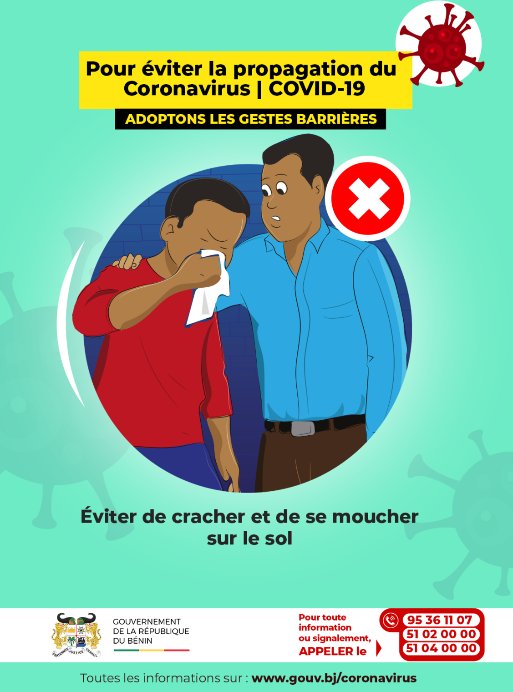
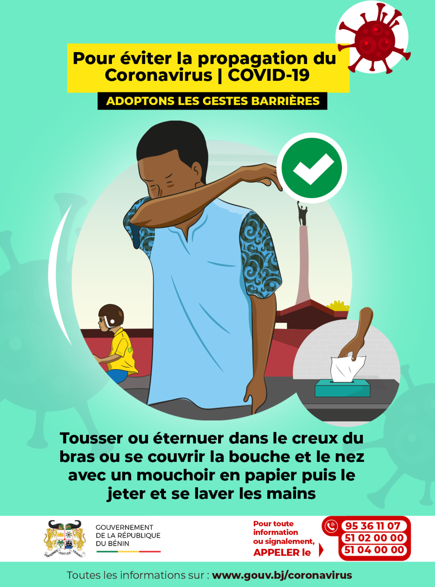
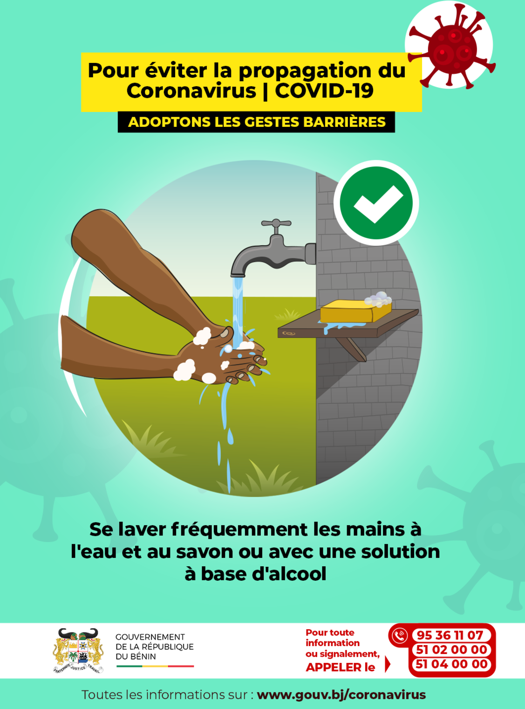
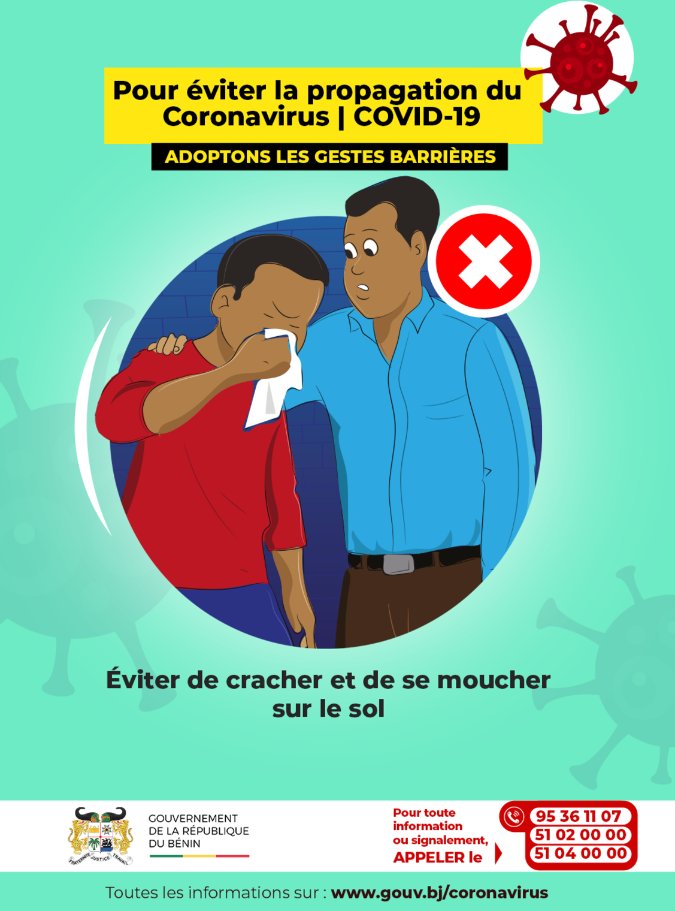
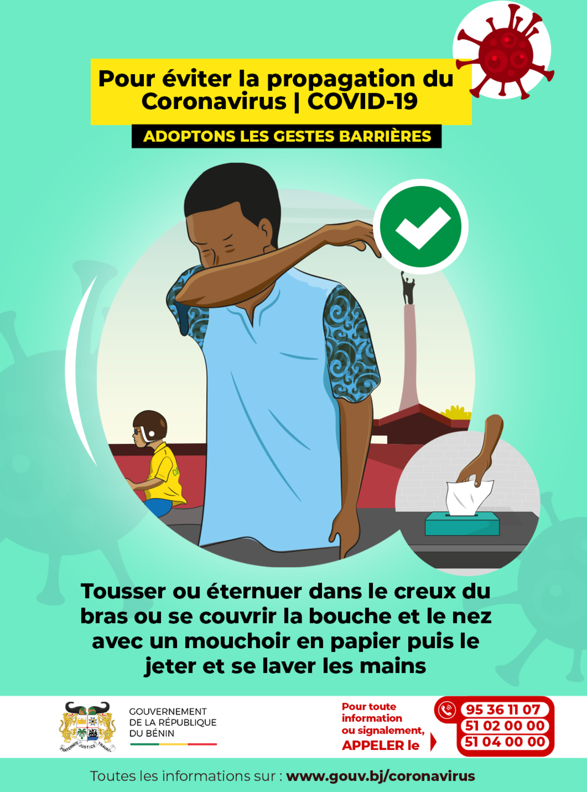
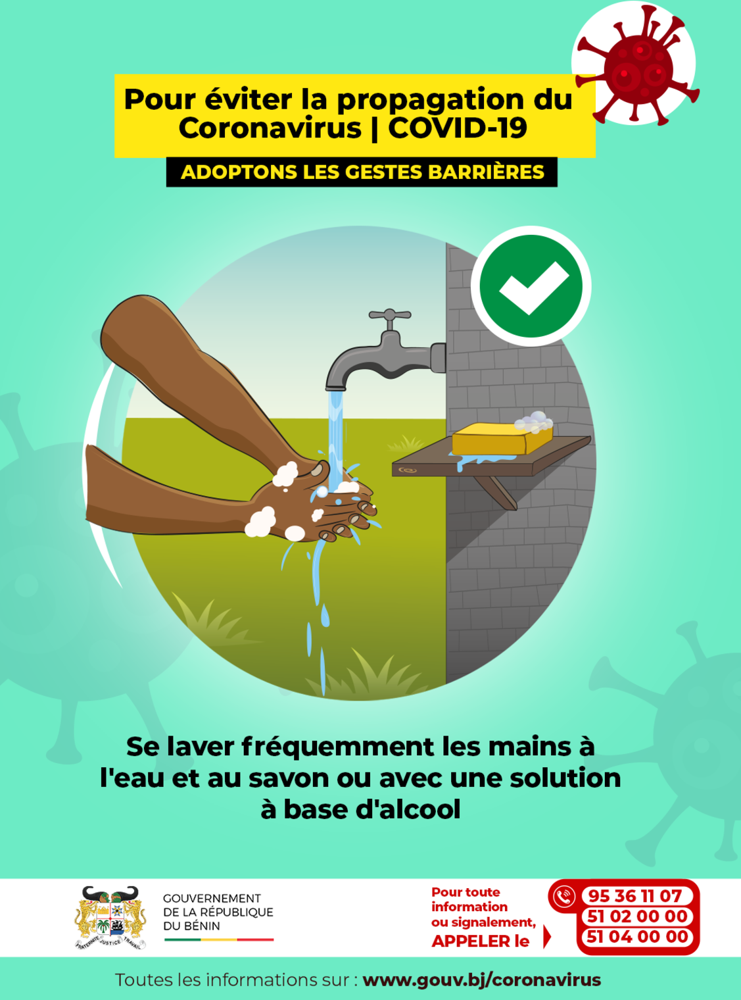

Tout savoir sur le COVID-19
Etre informé pour se sauver et sauver autrui
Le coronavirus, c'est quoi ?
Les coronavirus sont une famille de virus, qui provoquent des maladies allant d’un simple rhume (certains virus saisonniers sont des coronavirus) à des pathologies plus sévères comme le MERS-CoV ou le SRAS.
Le virus identifié en janvier 2020 en Chine est un nouveau coronavirus, nommé SARS-CoV-2. La maladie provoquée par ce coronavirus a été nommée COVID-19 par l’Organisation mondiale de la Santé - OMS. Depuis le 11 mars 2020, l’OMS qualifie la situation mondiale du COVID-19 de pandémie ; c’est-à-dire que l’épidémie est désormais mondiale.
Les gestes barrières
 

Les symptomes
La maladie à coronavirus 2019 (COVID-19) se caractérise par des symptômes bénins parmi lesquels un mal de gorge, de la toux, et de la fièvre. L'atteinte peut être plus sévère chez certaines personnes et peut entraîner une pneumonie ou des difficultés respiratoires.
Plus rarement, la maladie peut être mortelle. Les personnes âgées, et les personnes qui présentent d'autres problèmes médicaux (p. ex. asthme, diabète, ou maladie cardiaque), peuvent être plus vulnérables et tomber gravement malades. Les personnes touchées peuvent ressentir les symptômes suivants:
- mal de gorge
- toux
- fièvre
- difficultés respiratoires (cas sévères)